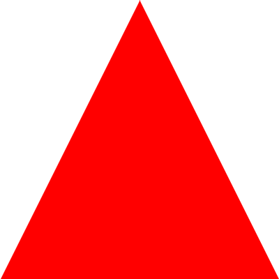

Videos
(4)
(kategorie)
(zurück)
::
tokyo tuna auction of 2025
(youtu.be/mol5bCRgsnA?si=nj06EoOvb_RHyP6h)
takt kurzfilm
(youtu.be/ODKeVHSROfY)

wood wave
(youtu.be/24orqkhjgB4?si=paiPzYjSDajyhSfr)
sven väth love parade 2000
(youtu.be/08VrNbnbz4o?si=22H97lBNV2bUipnC)
topographie der zaun 1995
(youtu.be/5Gd-UBymK-A?si=92VSt6WfgmOdEhxe)
ai art psycho emporium
(youtu.be/ateCynfWbQk?si=wxDqLG_Ok-v2Q1Xi)
stygiomedusa gigantea - deepsea oddities
(youtu.be/eDck1inm__s?si=fNE5wdHb-werqQ9j)
circle world
(youtu.be/UK9_h5Iku64?si=RWNyjfkb6SjPyu5j)
iceberg flipping over
(youtu.be/Sh271FAVZ0o?si=TpPX1YPsghWWHpC5)
why use a yellow underpainting?
(youtu.be/fTqqgTxPJEs?si=vX0ppEhZhHtxW6q3)
which friend are you?
(youtu.be/-_eYhAHJOtc?si=MQlkWIKho51U3wJR)
piano phase - steve reich
(youtu.be/i0345c6zNfM?si=Sz0THhxSqoz3gjrM)
why use a yellow underpainting?
(youtu.be/fTqqgTxPJEs?si=vX0ppEhZhHtxW6q3)
the power of the projector video essay
(youtu.be/eLNQu6dKSbw?si=VJktTAuKXCEX5Ry3)